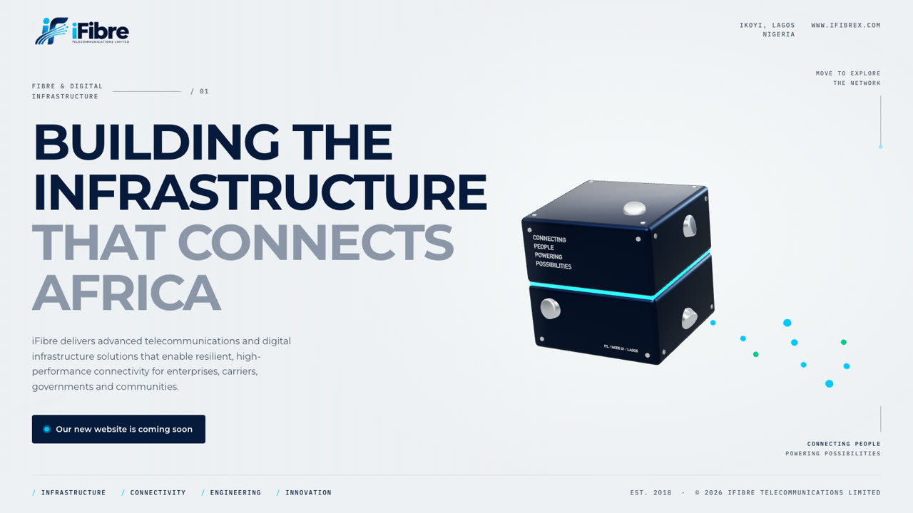
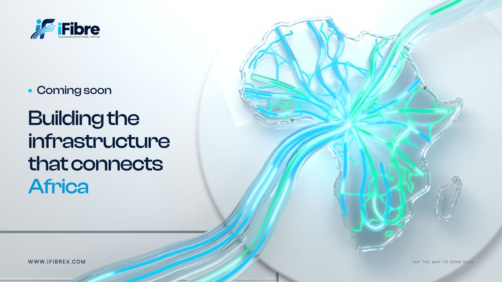

Option 01
Junction block
Live 3D fibre junction block rendered in the browser with three.js.

Option 02
Africa network
Blender-rendered glass Africa with light looping through the cables; tap the map to send data.
Option 03
Fibre cables
Blender-rendered fibre cables snake in from the screen edges, then glow with pulses and data packets.